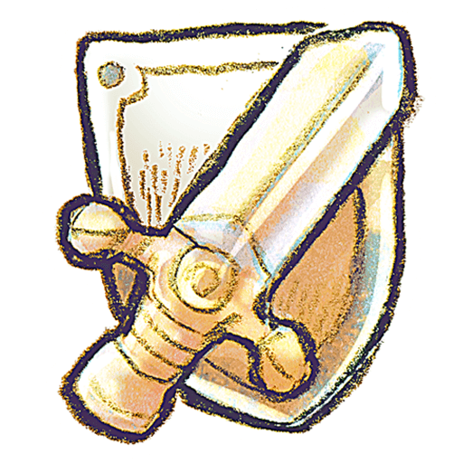

Atividades em Libras
As atividades são divertidas e educativas, e ajudam a praticar Libras, de maneira lúdica e eficaz. Elas são um ótimo complemento para o aprendizado da Libras. As dinâmicas em Libras são desenvolvidas especialmente para professores de Libras e trazem ideias para trabalhar com grupo de alunos. Elas abordam questões como Libras, alfabeto manual, expressões faciais, interpretações e ética.
150 Atividades:
São atividades sobre Libras, alfabeto manual, signwriting, surdez, personalidades e conhecimentos geraisCorreção automática:
150 Atividades em Libras: após responder pelo site, mostramos a correção, seus erros e acertos.Faixa Etaria:
Conteúdo cuidadosamente selecionado, recomendado para faixa etária acima de 12 anos

Ranking:
150 Atividades em Libras: quem ganhar mais pontos faz parte do Ranking dos Melhores, isso gera uma competição sadia com outros participantesFlexibilidade:
Acesse quando e onde quiser, através do seu computador, notebook ou celularMaterial:
As 150 atividades em Libras que você poderá fazer download das atividades ou dinâmicas e imprimirAssine nossa Newsletter para ficar dentro das novidades!
Desenvolvido por Eber Cintra
Residência em TIC Software 2024.2 - Turma 21 Nova Friburgo